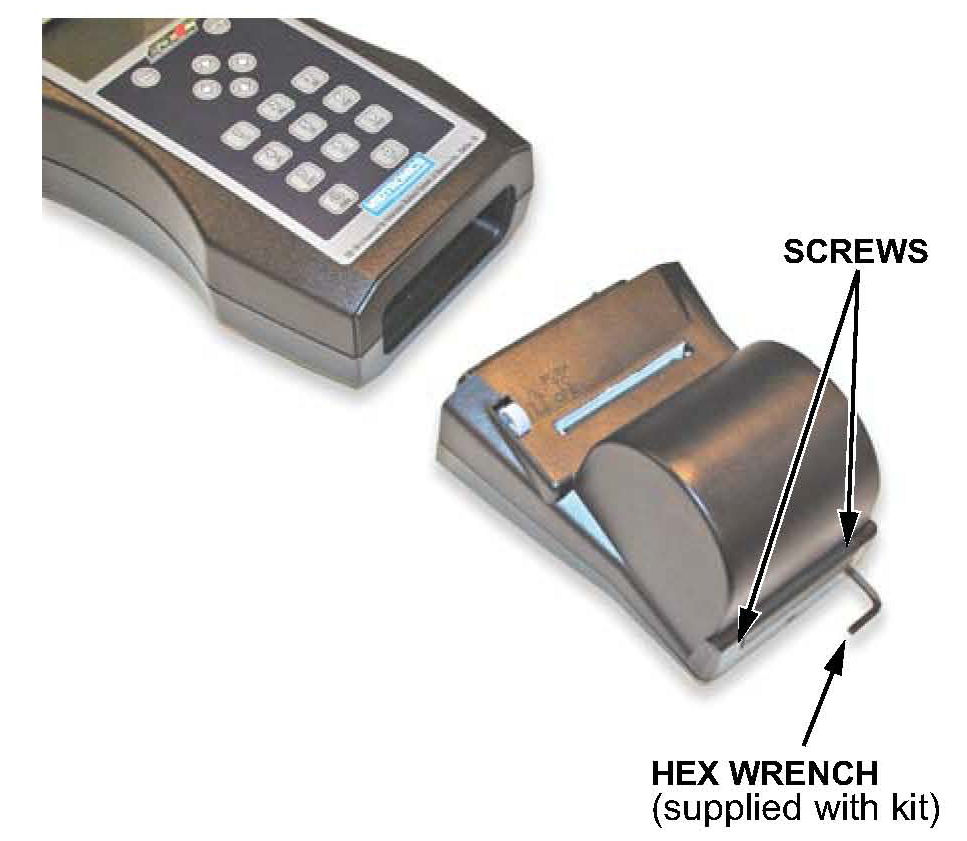
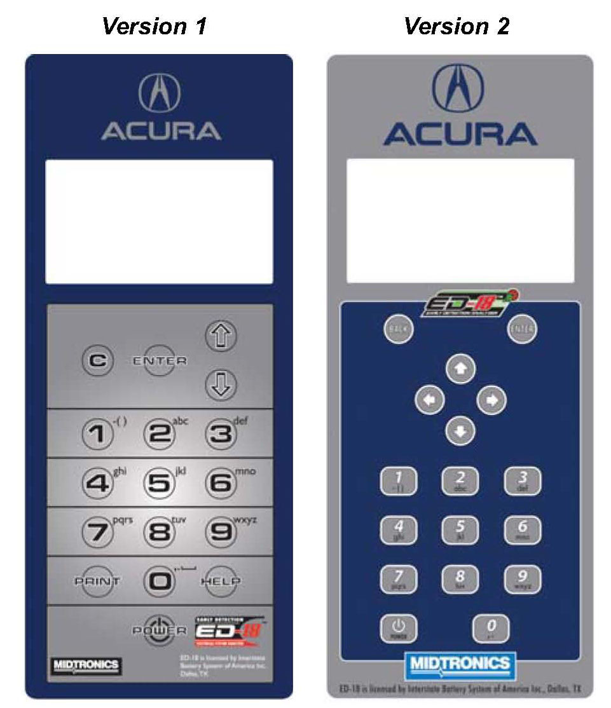
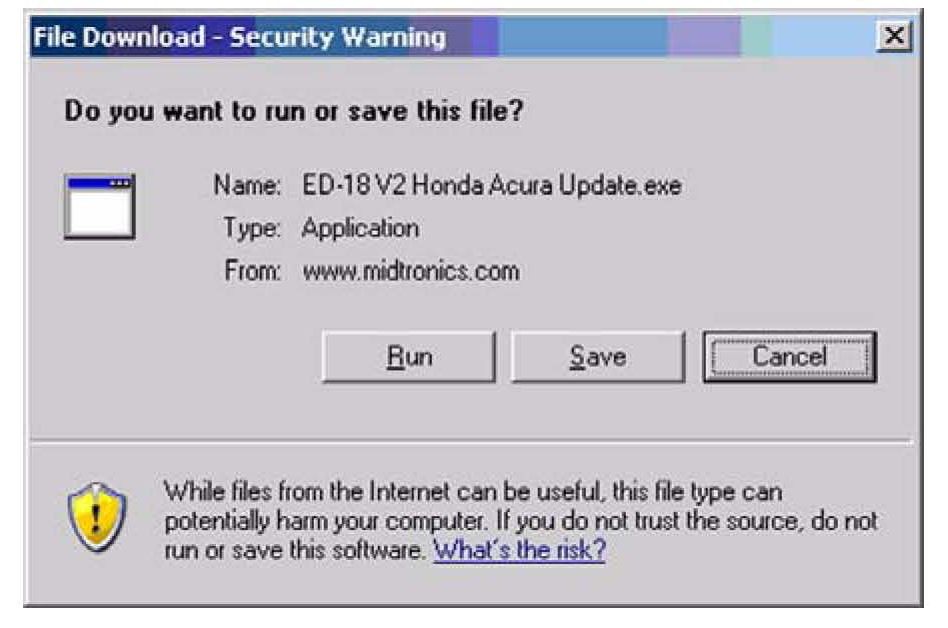
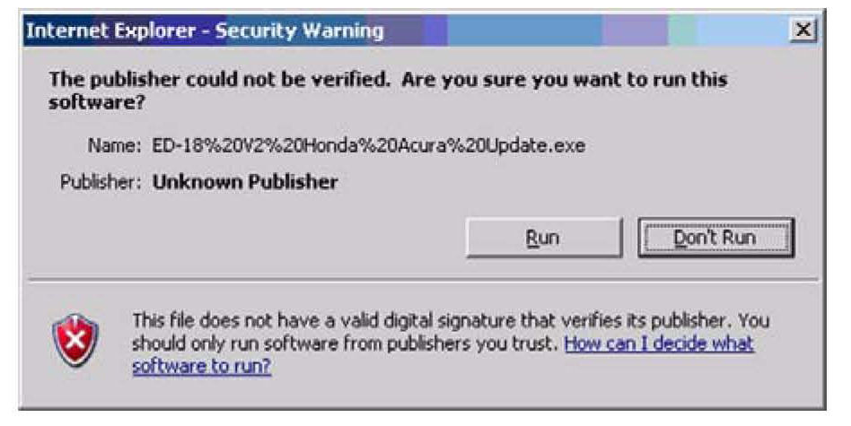
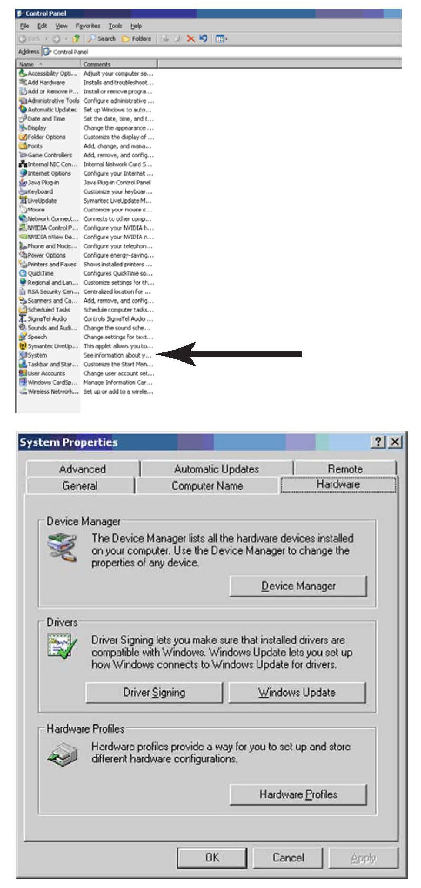
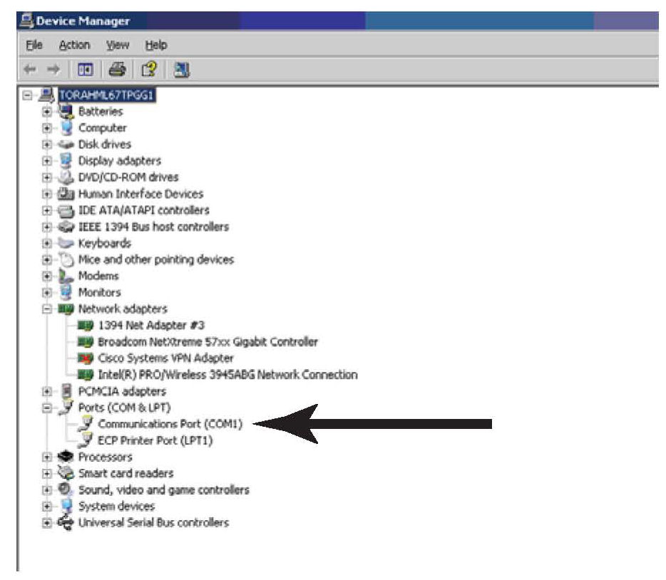
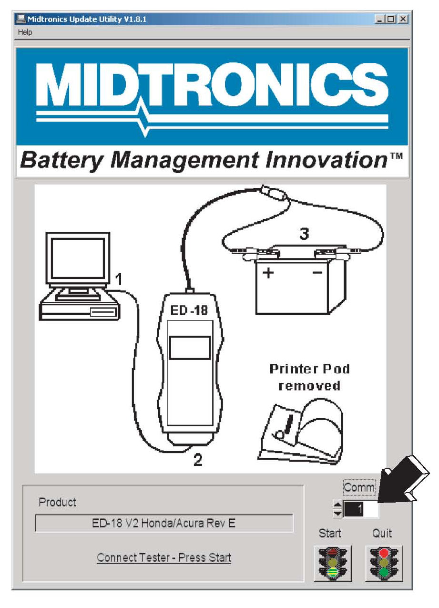
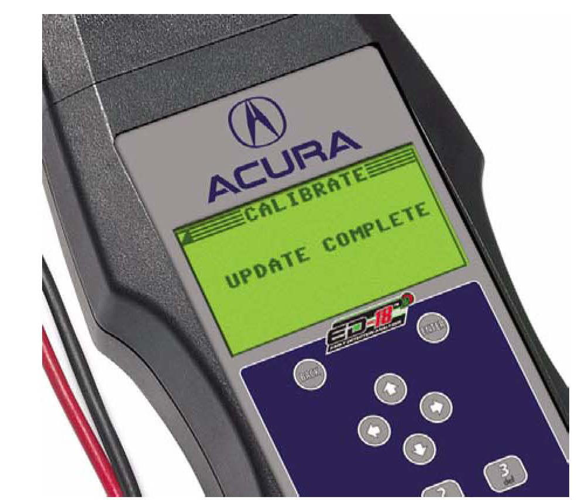

Electrical - ED-18 Battery Analyzer Update Info.
09-02?February 12, 2011
Applies To:
All Acura Vehicles
ED-18 Battery Analyzer Update Information
(Supersedes 09-027, dated June 30, 2009, to revise the information marked by the asterisks)
*REVISION SUMMARY
Under SOFTWARE VERSION, the method to check the current software was updated.*
INTRODUCTION
The software for the ED-18 Battery Analyzer (or tester) is updated periodically to fix software bugs and enhance the tool's function. To help you update the ED-18 tester more quickly, Acura no longer distributes CDs for the tester. You can now use the Midtronics ED-18 update wizard to download software and firmware to your ED-18 tester using a PC and the Internet. It is extremely important to use the latest ED-18 software to ensure that the current battery testing procedures are used.
Acura introduced a new policy to ensure that ED-18 testers are updated promptly. The ED-18 software must now be updated within 3 days of receiving notification from an iN message or other Acura communication. If an out-of-date version is used, any battery replacements may not be covered under warranty.
ED-18 UPDATE REQUIREMENTS
^ ED-18 Battery Analyzer:
ED-18 Version 1: P/N INBED18LLH
ED-18 Version 2: P/N INB17191845
^ R5232 (25 pin to 9 pin) interface cable:
P/N MTRi30ii2A*
^ 7/64" hex wrench: P/N INB17191270*
*Both the R5232 interface cable and the hex wrench
were included with the ED-18 update that was
shipped to dealerships in November 2008.
^ A fully charged 12-volt automotive battery, any size
^ Internet access
^ An IBM-compatible PC:
- Windows 95 operating system or higher (Windows 2000 or XP is preferred)
- CD ROM
- R5232 (9 pin) serial port, or an R5232 to USB
Adapter (P/N MTRA164)
(Some newer computers do not have an R5232
port. You will need to order the R5232 to USB
adapter to update your ED-18 testers.)
To order the ED-18 Battery Analyzer version 2, the interface cable, the R5232 to USB adapter, or the hex wrench, go to the Acura Tool and Equipment catalog on the iN (select Service > Service Bay > Tool and Equipment > Online Catalog), or call.
NOTE:
The ED-18 Battery Analyzer version i is no longer available for purchase.
SOFTWARE VERSION
*The current software version is listed online. Go to the iN (select Service > Service Bay > Diagnostic Tools Software Versions).*
To check the ED-18 version 1 software, click on:
Info > Version. The version number is located near the
top of the version screen.
To check the ED-18 version 2 software:
^ Turn on the tester, and read the version number on the screen. It should appear for about 3 seconds.
^ Or, you can click on: Language > Options> Info > Version. The version number is located near the top of the version screen.
WARRANTY CLAIM INFORMATION
None. This service bulletin is for information only.
ED-18 UPDATE INSTRUCTIONS

1. Make sure the ED-18 is off, then detach the printer by using the hex wrench to remove the two screws at the bottom of the printer. Pull the printer straight out from the ED-18 to avoid damaging the connector terminals.
2. Connect the R8232 interface cable to the ED-18
where the printer was connected, then connect the
interface cable to your PC.
NOTE:
If your computer doesn't have an R8232 serial port, use the R8232 to USB adapter.
3. Connect the ED-18 battery clamps to a fully charged 12-volt battery.
4. Online, go to www.midtronics.com/home/clientlogin/clientlogin.aspx:
5. Enter your username and password, then click the Login button.
^ For ED18 version 1:
Username: acuraedv1
Password: acuraedv1
^ For ED18 version 2:
Password: acuraedv2
Username: acuraedv2
6. You should see an image of your ED-18 tester.
Click on the highlighted Update Software link under the image.

NOTE:
The ED-18 tester version 2 software is shown for example. Version i is similar.
7. Fill in your dealer number, the service manager's name, and the ED-18 serial number(s). The dealer name, the dealer address, and the dealer phone number are automatically filled in. Click SUBMIT REQUEST.
8. You should see the image of your ED-18 tester again. Click on the highlighted Acura ED-18 V2 Software Update link.

9. A File Download - Security Warning screen appears. Select Run.
10. A file will be downloaded to your computer. After it
is finished, an Internet Explorer - Security
Warning screen appears. Select Run.

NOTE:
Depending on your network setup, you may see more warning screens than are seen here.
11. Turn on the ED-18.
12. Before using the Midtronics update utility, make sure your computer port settings are correct. Click on: My Computer > Control Panel > System > Hardware Tab > Device Manager.
Or, you can click on: Windows Start button >
Settings > Control Panel > System > Hardware
Tab > Device Manager.

NOTE:
If you are using the RS232 to USB adapter, make sure to plug it in before checking the port settings.

Expand Ports, and check the communications port number. The communications port number should match the COMM number in the Midtronics update utility. If the numbers do not match, click on the arrows next to the COMM windows in the Midtronics update utility, and change the number to match the computer system's port number.

Make sure this communications port number matches the COMM number on the update. If it does not, change the number on the update.
13. Click on Start to begin the update which takes about a minute. A progress bar appears. Wait until you get a message indicating the update was successful.
NOTE:
^ If the clamps come off the battery, or the R8232 interface cable comes loose, turn the ED-18 off, then back on. When the logon screen appears on the ED-18, click on Start to restart the update.
^ If the error message Flash not erased appears, replace the AA batteries in the ED-18, and try the update again.
14. Click on OK on the ED-18 update.

15. Click on Quit on the ED-18 update. Make sure the message UPDATE COMPLETE appears on the ED-18 tester.
16. Turn the ED-18 tester off, then back on.
17. Confirm the software on the ED-18 tester is updated to the software version listed under SOFTWARE VERSION.
NOTE:
If you have any problems updating the ED-18, call Midtronics at 866-592-8054.
18. Reinstall the printer.
19. If you have more than one ED-18, repeat the update procedure for each unit.
20. Once all ED-i8s are updated, store the R5232 interface cable and the hex wrench in a safe location for future updates.

Disclaimer